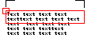

|
Width Property |
Specifies the width of the text boundary, view, image, toolbar, or main application window.
Signature
object.Width
object
Application, DwfUnderlay, MText, PViewport, Raster, TextStyle, Toolbar, View, Viewport, Wipeout
The object this property applies to.
Width
Double; read-write (except for the Toolbar and Raster objects which are read-only)
The width of the given object. This value must be a positive, non-negative number.
Remarks
MText: Specifies the width of the text boundary in the current units. AutoCAD wraps the text within the text boundary, therefore the width must be a positive number large enough to accommodate the text. If the width is not large enough, the text may be difficult to read or may not be visible at all.
Width |
 |
TextStyle: Sets the character spacing. Entering a value of less than 1.0 condenses the text. Entering a value of greater than 1.0 expands it. The maximum value is 100.
Viewport: The width of a viewport is the X axis measurement of the viewport frame.
View: The width of a view is the X axis measurement of the area within a viewport that is used to display the model.
Raster: The width of the raster image in pixels.
| Comments? |